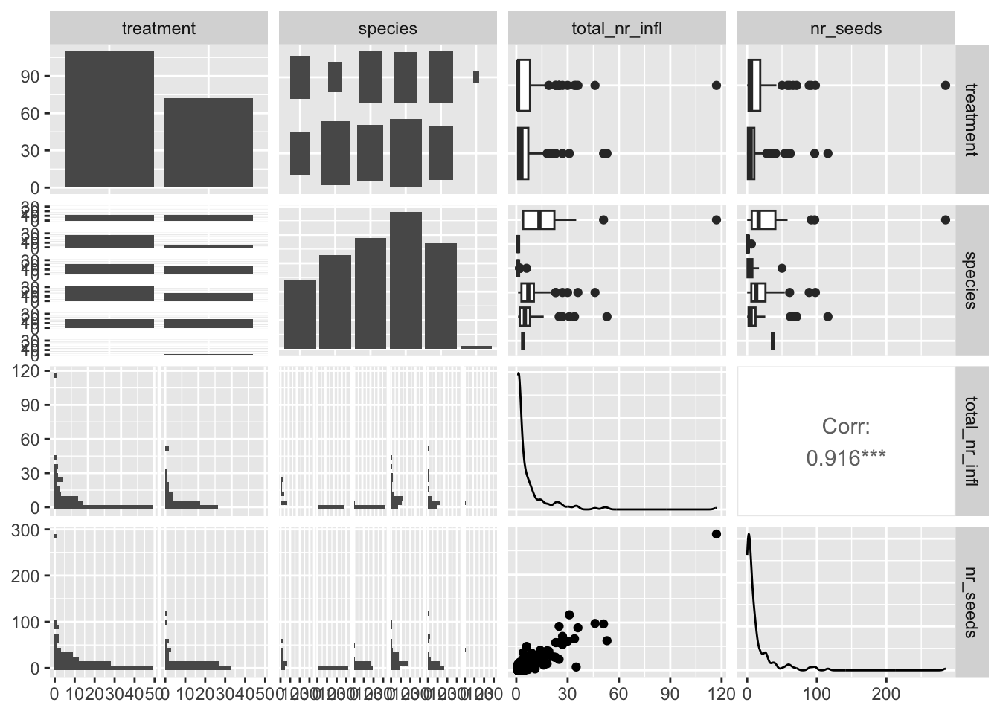
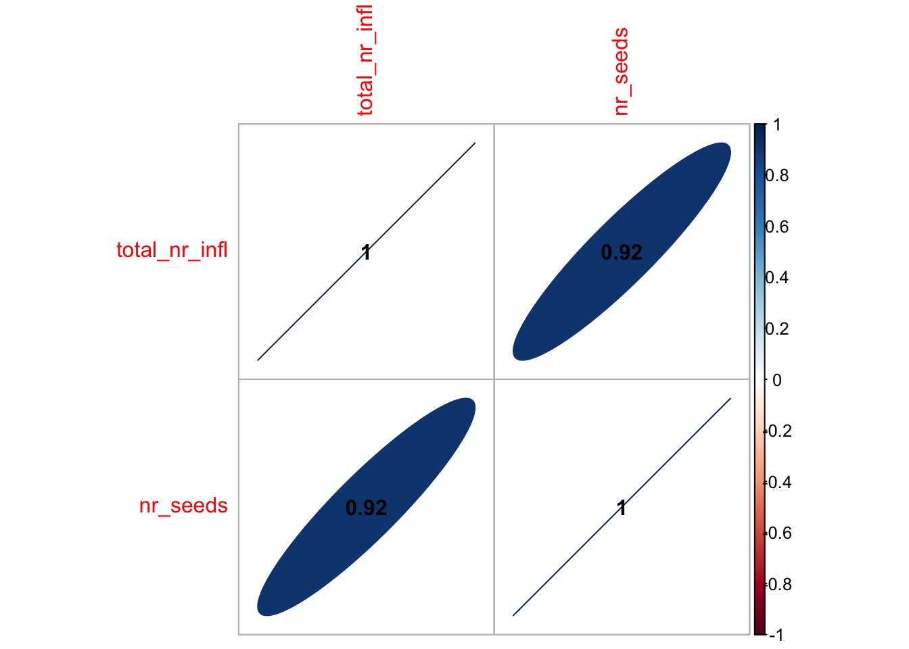
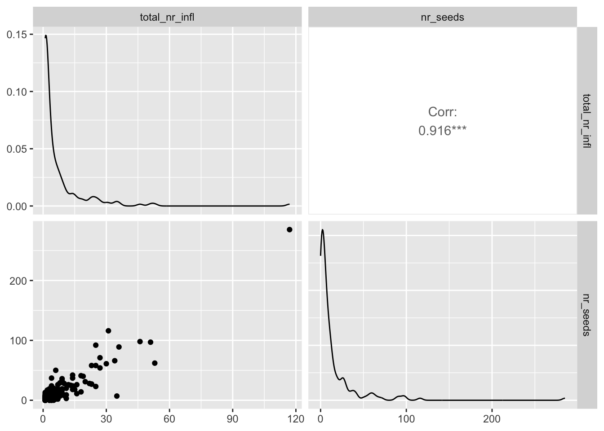
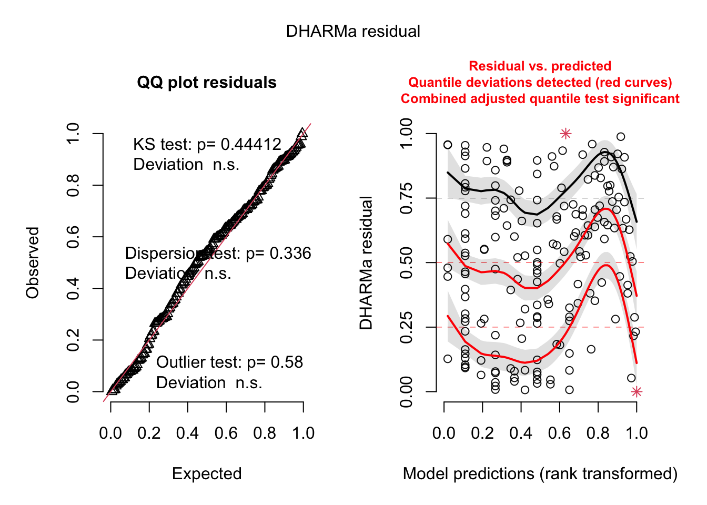
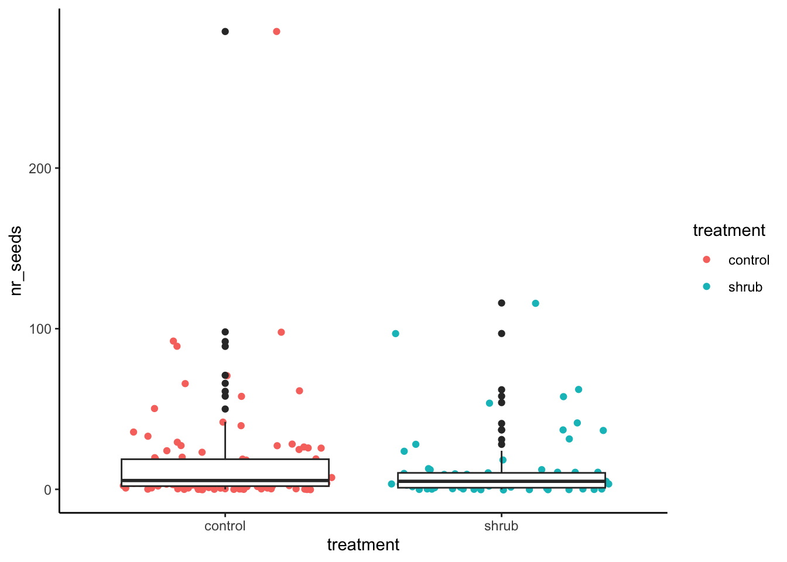
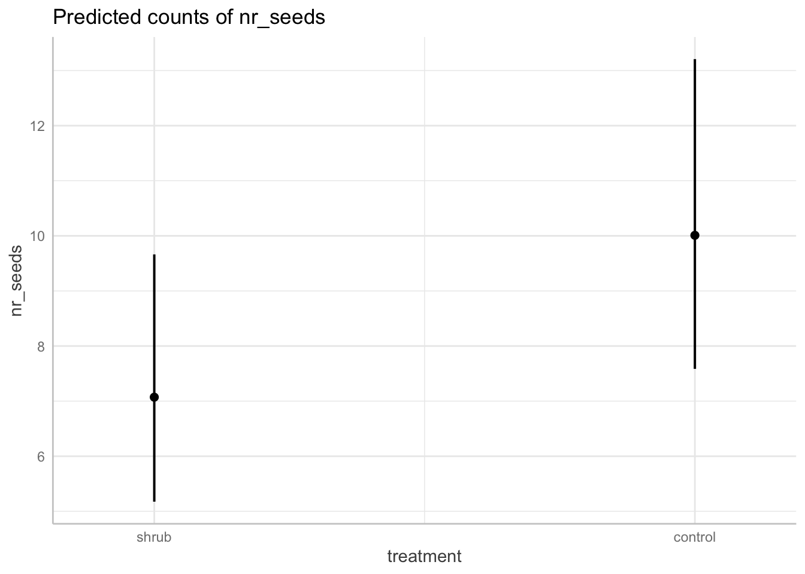

seed_ctwt <- here("data", "shrubstudy_seed_ctwt.ms.data.csv") |>
read.csv()final-scratch-paper-kyle
#Final
Problem two
Questions: How does seed count vary with plot type (shrub or open), plant species, and total number of inflorescences? Is there a simpler model that explains seed count, and if so, what is it?
Independent Variable: Seed Count
Predictor Variable: Plot type (shrub or open) [binary], plant species , total number of inflorescences
# from peppa
#Clean data
seed_ctwt_subset <- seed_ctwt |>
select(c("treatment", "species", "total_nr_infl", "nr_seeds")) |> #Plot type, plant species, total number of inflorescences - select relevant columns
drop_na(nr_seeds) #Thats a lot of data missing... should we do anything?
#Not quite sure what the total number of inflorescences vs inflorescence collected meansggpairs(seed_ctwt_subset)`stat_bin()` using `bins = 30`. Pick better value with `binwidth`.
`stat_bin()` using `bins = 30`. Pick better value with `binwidth`.
`stat_bin()` using `bins = 30`. Pick better value with `binwidth`.
`stat_bin()` using `bins = 30`. Pick better value with `binwidth`.
#Calculate Pearson's r for numerical values only
seed_cor <- seed_ctwt_subset |>
dplyr::select(total_nr_infl:nr_seeds) |> #Not sure if this is correct
cor(method = "pearson")
#Create correlation plot
corrplot(seed_cor,
method = "ellipse", #Change shape of item in cells
addCoef.col = "black") #Add coefficient in black text
seed_ctwt_subset |>
dplyr::select(total_nr_infl:nr_seeds) |> #Not sure if this is correct either
ggpairs()
#Create a null and a full model - fit multiple linear models in order to see which one is best
null <- lm(nr_seeds ~ 1, data = seed_ctwt_subset)
#Assume no relationship between total mass and predictor variables
#1 indicates absence of all other predictors
full <- lm(nr_seeds ~ treatment + species + total_nr_infl, data = seed_ctwt_subset)
#Assume predictor variables can predict biomasspar(mfrow = c(2, 2))
plot(full) #DATA IS NOT NORMAL CANNOT DO MULTIPLE LINEAR REGRESSION Warning: not plotting observations with leverage one:
10
# linear model, we know this is wrong
seed_L1 <- lm(nr_seeds ~ treatment + species + total_nr_infl, data = seed_ctwt_subset)
# generalized linear model with Poisson distribution
seedctwt2 <-glm(nr_seeds ~ treatment + species + total_nr_infl, data = seed_ctwt_subset, family = "poisson")
seedctwt2.a <- glm(nr_seeds ~ treatment + species + total_nr_infl, data = seed_ctwt_subset, family = "poisson")
# generalized linear model with negative binomial distribution
seedctwt3 <- glm.nb(nr_seeds ~ treatment + species + total_nr_infl, data = seed_ctwt_subset)
seedctwt3.a <- glmmTMB(nr_seeds ~ treatment + species + total_nr_infl, data = seed_ctwt_subset, family = "nbinom2")Going to to use generalized Linear model with negative binomial distribution
seedctwt3 <- glm.nb(nr_seeds ~ treatment + species + total_nr_infl, data = seed_ctwt_subset)plot(simulateResiduals(seedctwt3))
reason to why using
MuMIn::model.sel(seed_L1,seedctwt2, seedctwt3)Model selection table
(Int) spc ttl_nr_inf trt family class init.theta link df
seedctwt3 1.918 + 0.07499 + NB(1.5049,l) negbin 1.5 log 9
seed_L1 -2.567 + 2.15000 + g(i) lm 9
seedctwt2 2.549 + 0.02989 + p(l) glm 8
logLik AICc delta weight
seedctwt3 -556.455 1132 0.00 1
seed_L1 -692.468 1404 272.03 0
seedctwt2 -1150.107 2317 1185.09 0
Abbreviations:
family: g(i) = 'gaussian(identity)',
NB(1.5049,l) = 'Negative Binomial(1.5049,log)', p(l) = 'poisson(log)'
Models ranked by AICc(x) Call: glm.nb(formula = nr_seeds ~ treatment + species + total_nr_infl, data = seed_ctwt_subset, init.theta = 1.504930235, link = log)
Deviance Residuals: Min 1Q Median 3Q Max
-3.4884 -0.9516 -0.2062 0.3100 2.7942
Coefficients: Estimate Std. Error z value Pr(>|z|)
(Intercept) 1.91762 0.22214 8.633 < 2e-16 treatmentshrub -0.34744 0.14433 -2.407 0.0161
speciesCARRUP -1.56758 0.29371 -5.337 9.44e-08 speciesGEUROS -0.17847 0.25235 -0.707 0.4794
speciesKOBMYO 0.19845 0.22373 0.887 0.3751
speciesMINOBT -0.36228 0.23755 -1.525 0.1272
speciesTRIDAS 1.74077 0.85712 2.031 0.0423
total_nr_infl 0.07499 0.00559 13.416 < 2e-16 ***
| Signif. codes: 0 ‘’ 0.001 ‘’ 0.01 ‘’ 0.05 ‘.’ 0.1 ‘ ’ 1 |
| (Dispersion parameter for Negative Binomial(1.5049) family taken to be 1) |
| Null deviance: 543.44 on 181 degrees of freedom Residual deviance: 213.68 on 174 degrees of freedom AIC: 1130.9 |
| Number of Fisher Scoring iterations: 1 |
| Theta: 1.505 Std. Err.: 0.212 |
| 2 x log-likelihood: -1112.910 |
| ::: {.cell} |
| ```{.r .cell-code} # when looking at the treatment shurb it was -0.34744,from summary, so it is in reference to the open plot |
| ggplot()+ geom_jitter(data = seed_ctwt_subset, aes(x = treatment, y = nr_seeds, color = treatment))+ geom_boxplot(data = seed_ctwt_subset, aes(x = treatment, y = nr_seeds))+ #ylim(0,125) theme_classic() ``` |
| ::: {.cell-output-display}  ::: |
{.r .cell-code} #there was an outlier at y-axis of 180 ::: |
| ::: {.cell} |
{.r .cell-code} View(seed_ctwt_subset) colnames(seed_ctwt_subset) |
| ::: {.cell-output .cell-output-stdout} |
| ::: {.cell} |
| ```{.r .cell-code} library(ggplot2) model_pred <- ggpredict(seedctwt3, terms = “treatment”, back.transform = TRUE) |
| model_pred ``` |
| ::: {.cell-output .cell-output-stdout} ``` # Predicted counts of nr_seeds |
| treatment | Predicted | 95% CI |
shrub | 7.07 | [5.18, 9.66] control | 10.01 | [7.59, 13.21]
Adjusted for: * species = KOBMYO * total_nr_infl = 2.50
:::
:::
::: {.cell}
```{.r .cell-code}
plot(ggpredict(seedctwt3, terms = "treatment", back.transform = TRUE))#same way but getting error 
:::
confint(seedctwt3)Waiting for profiling to be done... 2.5 % 97.5 %
(Intercept) 1.48135091 2.37173652
treatmentshrub -0.62574220 -0.06685413
speciesCARRUP -2.15660520 -0.98976040
speciesGEUROS -0.68625088 0.32088265
speciesKOBMYO -0.24125179 0.62418151
speciesMINOBT -0.82158807 0.08813708
speciesTRIDAS 0.34320597 3.95113117
total_nr_infl 0.05879443 0.09257054r.squaredGLMM(seedctwt3)Warning: 'r.squaredGLMM' now calculates a revised statistic. See the help page.Warning: the null model is correct only if all variables used by the original
model remain unchanged. R2m R2c
delta 0.6826312 0.6826312
lognormal 0.7414369 0.7414369
trigamma 0.5975110 0.5975110# model object in table
seedctwt3 %>%
as_flextable()Estimate | Standard Error | z value | Pr(>|z|) | ||
|---|---|---|---|---|---|
(Intercept) | 1.918 | 0.222 | 8.633 | 0.0000 | *** |
treatmentshrub | -0.347 | 0.144 | -2.407 | 0.0161 | * |
speciesCARRUP | -1.568 | 0.294 | -5.337 | 0.0000 | *** |
speciesGEUROS | -0.178 | 0.252 | -0.707 | 0.4794 |
|
speciesKOBMYO | 0.198 | 0.224 | 0.887 | 0.3751 |
|
speciesMINOBT | -0.362 | 0.238 | -1.525 | 0.1272 |
|
speciesTRIDAS | 1.741 | 0.857 | 2.031 | 0.0423 | * |
total_nr_infl | 0.075 | 0.006 | 13.416 | 0.0000 | *** |
Signif. codes: 0 <= '***' < 0.001 < '**' < 0.01 < '*' < 0.05 | |||||
| |||||
(Dispersion parameter for Negative Binomial(1.5049) family taken to be 1) | |||||
Null deviance: 543.4 on 181 degrees of freedom | |||||
Residual deviance: 213.7 on 174 degrees of freedom | |||||
#"treatment", "species", "total_nr_infl", "nr_seeds" #predictions <- ggpredict(seedctwt3, terms = c("treatment", "species", "total_nr_infl", "nr_seeds")) %>%
#rename(nr_seeds = seed count,
# total_nr_infl = influrosence)
#ggplot(salamanders, aes(x = cover, y = nr_seeds, fill = mined)) +
# geom_point(aes(color = mined), alpha = 0.5) +
#facet_wrap(~species) +
# geom_line(data = predictions, aes(x = x, y = predicted, color = mined)) +
# geom_ribbon(data = predictions, aes(x = x, y = predicted, ymin = conf.low, ymax = conf.high, fill = mined), alpha = 0.2) +
#scale_fill_manual(values = c("yes" = "blue", "no" = "orange")) +
# scale_color_manual(values = c("yes" = "blue", "no" = "orange")) +
# theme_bw() +
# facet_wrap(~spp, scales = "free_y") +
#labs(fill = "Mined", color = "Mined")